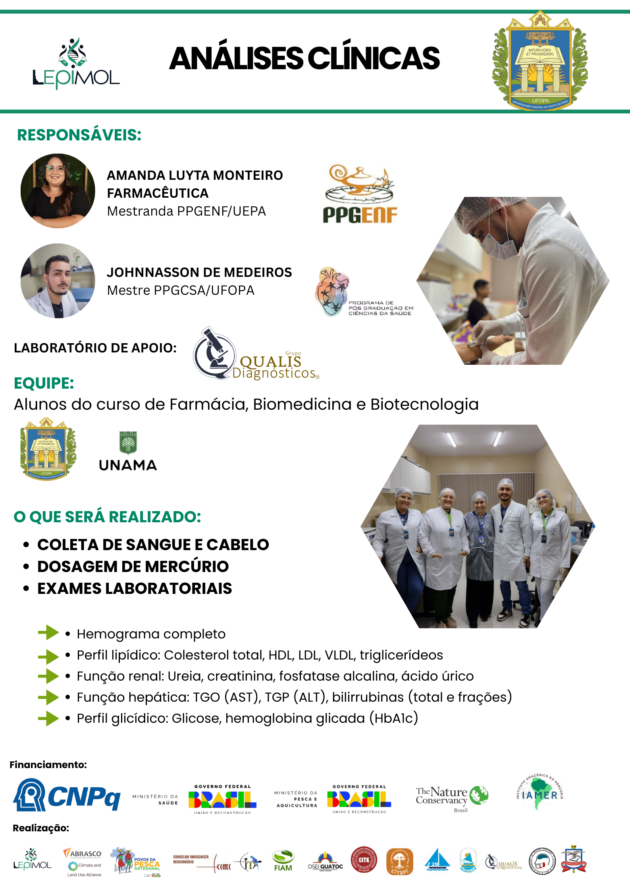
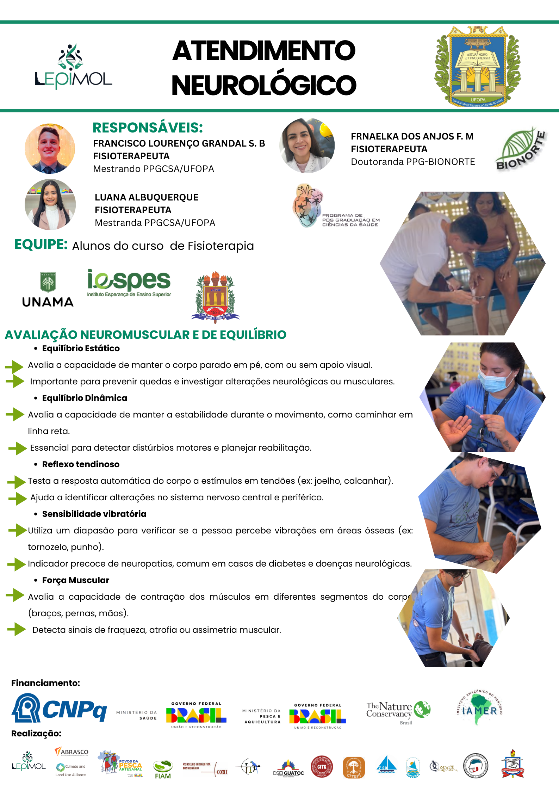
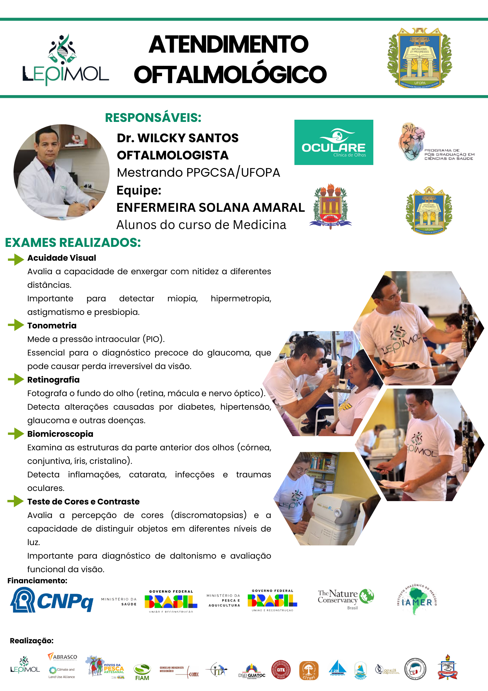
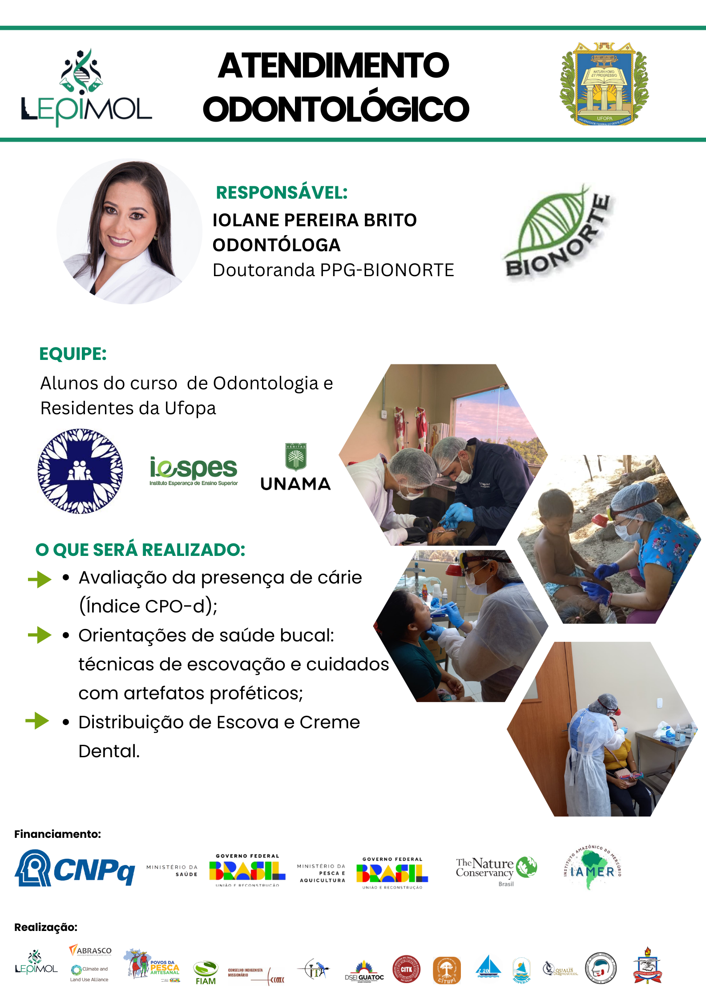

Numa iniciativa de grande impacto para a saúde pública na região, o LEpiMol, em conjunto com os seus parceiros, promoveu um mutirão de saúde completo, oferecendo uma variedade de exames e atendimentos essenciais para a população local. A ação contou com uma equipa multidisciplinar de profissionais e estudantes de diversas áreas da saúde.
Triagem Geral
Sob a responsabilidade da Enfª. Ana Emília Macedo, a equipa de enfermagem e medicina realizou a aferição da pressão arterial, medições antropométricas (peso, altura, circunferência abdominal) e testes de glicemia capilar. Estes procedimentos são vitais para o rastreio e prevenção de doenças crónicas como diabetes e hipertensão.
Análises Clínicas
A equipa liderada pela Farmacêutica Amanda Luyta Monteiro e pelo Mestre Johnnasson de Medeiros realizou colheitas de sangue e cabelo para dosagem de mercúrio e exames laboratoriais completos, incluindo hemograma, perfil lipídico, função renal e hepática.
Atendimento Neurológico
Os fisioterapeutas Francisco Lourenço Grandal S. B, Luana Albuquerque e Frnaelka dos Anjos F. M conduziram a avaliação neuromuscular e de equilíbrio. Foram realizados testes de equilíbrio estático e dinâmico, reflexo tendinoso, sensibilidade vibratória e força muscular para detetar alterações neurológicas e prevenir quedas.
Atendimento Oftalmológico
O Oftalmologista Dr. Wilcky Santos e a Enfermeira Solana Amaral realizaram uma série de exames visuais, como acuidade visual, tonometria (pressão intraocular), retinografia, biomicroscopia e teste de cores. Estes exames são essenciais para o diagnóstico precoce de doenças como glaucoma, catarata e retinopatias.
Atendimento Odontológico
A equipa da Odontóloga Iolane Pereira Brito realizou avaliação da presença de cárie, orientações de saúde bucal sobre técnicas de escovagem e cuidados com próteses, além da distribuição de kits de higiene com escova e creme dental para a comunidade.